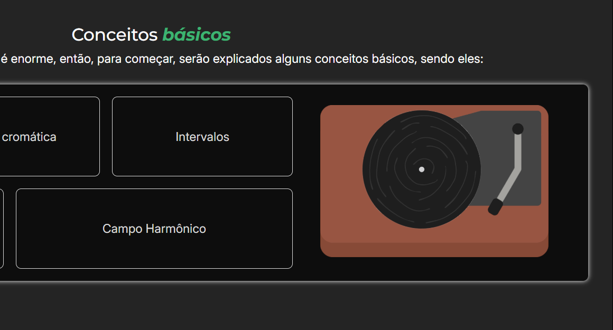

Sobre o autor
Olá, meu nome é Felipe Alves Walter e atualmente estudo no Cefet-MG cursando informática, fiz esse site para um trabalho da disciplina de laboratório de programação web (LPW). Faz um tempo que tenho me interessado bastante sobre teoria musical e resolvi aplicar o pouco que sabia da mesma para temtar criar um site interessante e que tivesse informações pertinentes sobre o básico do assunto.
Página Biohazard
Comprehensive layout
Um Comprehensive layout extremamente básico foi feito no começo do desenvolvimento do site, tendo o intuito de apenas dividir as áreas e organizar a responsividade. No fim, a divisão das áreas ficaram completamente diferentes das planejadas no comprehensive layout.
Easter eggs
Alguns easter eggs foram colocados dentro da página, alguns mais escondidos, outros menos. O primeiro foi no toca discos, no qual quando o disco é clicado a música Faint do Linkin Park começa a tocar.
- 
O segundo easter egg a ser adicionado foi as capas de álbum nas barras de navegação para celular, cada página possui duas capas e todas são diferentes.
Por fim, o último easter egg é o de que todas as páginas possuem uma clave musical diferente como ícone, a primeira possui a clave de sol, a segunda possui a clave de fá e a terceira possui a clave de dó.
Interações no site
O site em geral tem bastantes interações, na primeira página, além do toca discos, todas as notas/acordes dos exemplos são clicáveis e estão em verde.

No entanto, a interação principal é na segunda página, que possui um piano online. O funcionamento do piano e das outras interações que envolvem áudio estão atreladas á função somNota(), que varia a nota tocada de acordo com o parâmetro recebido.
Créditos
Aqui estão os créditos dos recursos utilizados de outros sites